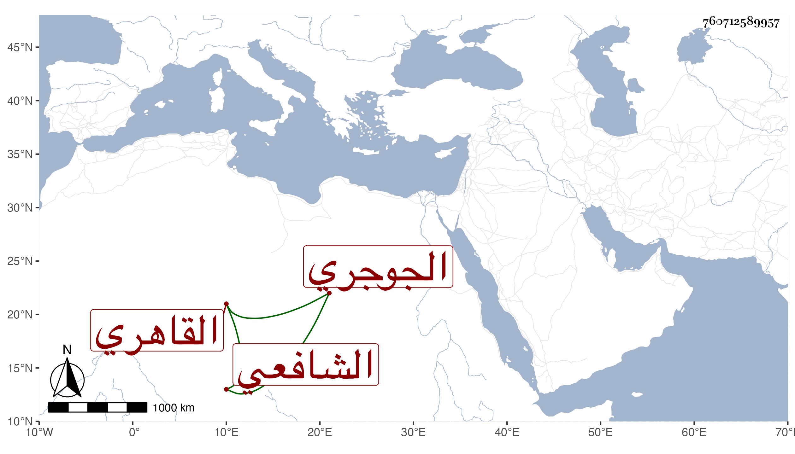

0902Sakhawi.DawLamic.ITO20230111-ara1.EIS1600.760712589957
Biography ID: 760712589957
102
محمد بن عبد العزيز الشمس الجوجري ثم القاهري الشافعي ابن أخت الجمال عبد الله بن البحشور . قرأ القرآن وشيئا من التنبيه وكتب شرحه للزنكلوني وتعاني الشهادة وجلس مع خاله في حانوت المراحليين وكذا كان شاهد العمائر في وقف البيمارستان ، ولم يذكر عنه في ذلك إلا الخير مع كثرة تلاوته ورغبته في الجماعات وإقباله على شأنه وسكونه وعدم تبسطه . مات في ربيع الأول سنة سبع وثمانين وقد زاحم السبعين رحمه الله .
